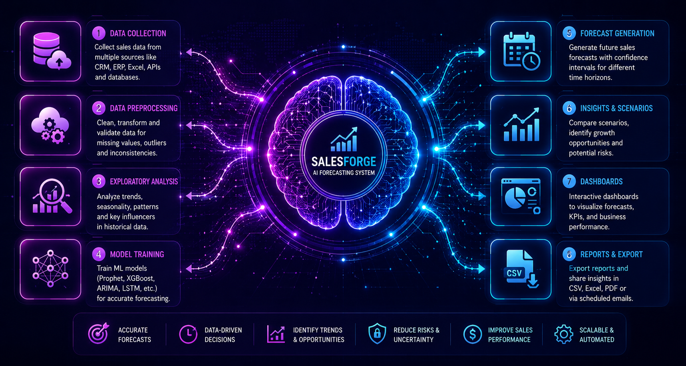
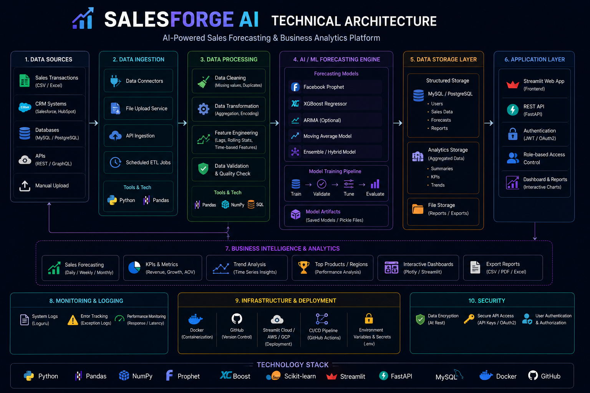
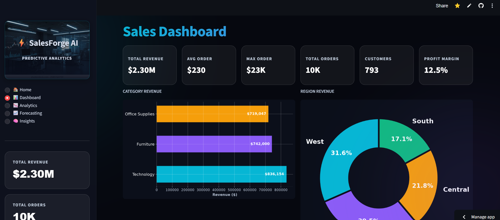
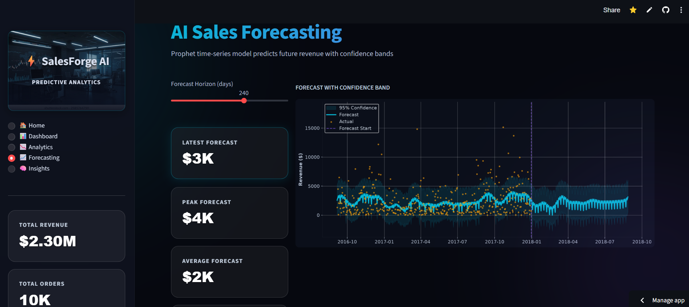
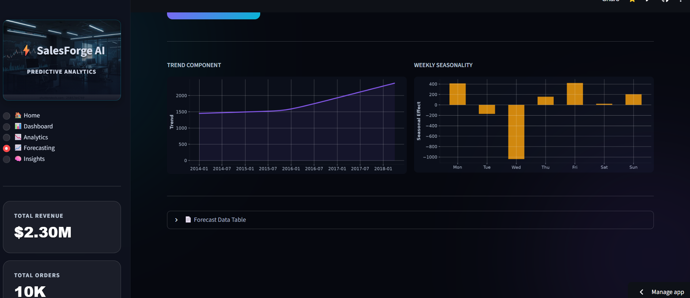
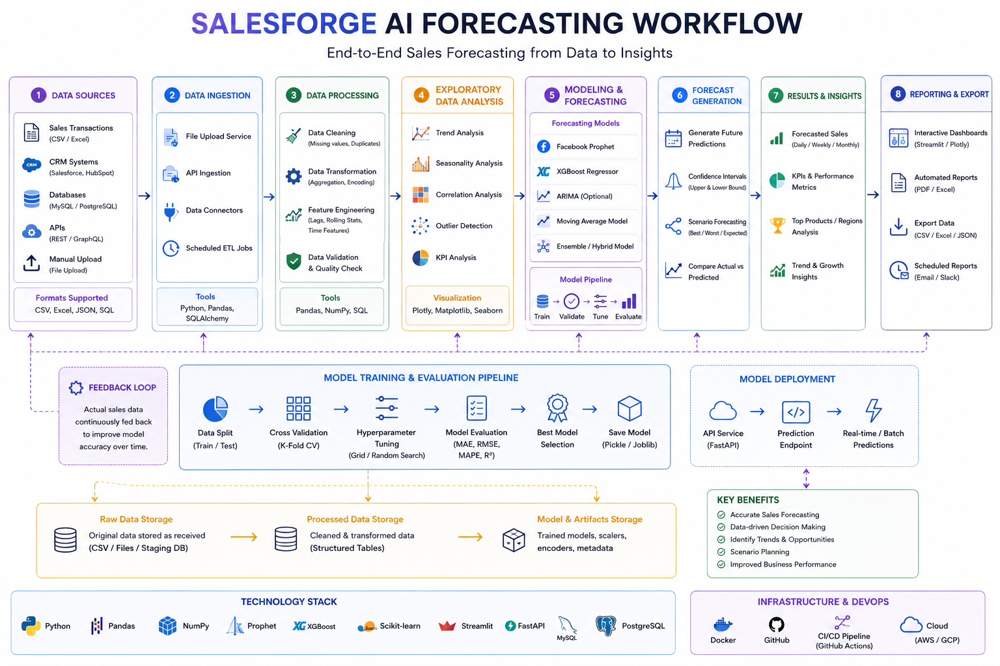

SalesForge AI is an AI-powered sales forecasting and business intelligence platform built to help organizations analyze historical sales data, identify trends, forecast future revenue, and make informed business decisions using Machine Learning and interactive analytics. The platform combines predictive forecasting, visual dashboards, business insights, and KPI monitoring through a modern Glassmorphism Streamlit interface.

Forecast Engine
Interactive Dashboards
Prophet Forecasting
Business Analytics
PROJECT OVERVIEW
SalesForge AI is an intelligent sales forecasting and business analytics platform designed to help businesses predict future sales using Machine Learning while providing comprehensive business insights through interactive dashboards. The application enables users to explore historical sales performance, analyze regional and category-wise trends, monitor KPIs, generate AI-based sales forecasts, and download prediction reports for strategic planning. Built using Facebook Prophet, Streamlit, Pandas, Matplotlib, and Seaborn, the platform transforms raw business data into meaningful insights that support data-driven decision-making.
01
Businesses often struggle to accurately forecast future sales using traditional spreadsheets and manual calculations. Without predictive insights, organizations face challenges in inventory planning, revenue estimation, and strategic decision-making.
The objective was to develop an AI-powered business analytics platform capable of forecasting future sales trends, analyzing historical performance, and providing actionable business intelligence through interactive visual dashboards.
02
SalesForge AI combines Machine Learning, Business Intelligence, and Interactive Data Visualization into one platform. The application enables users to analyze historical sales, identify business trends, forecast future revenue using Facebook Prophet, explore regional and category-wise performance, monitor KPIs, and export prediction reports for business planning.
Predicts future sales trends using Facebook Prophet time-series forecasting.
Displays KPIs, revenue trends, and sales performance through dynamic charts.
Analyze sales performance across regions, categories, and customer segments.
Generates strategic recommendations to support business decision-making.
03
Upload historical sales dataset.
Clean and preprocess sales data using Pandas.
Analyze KPIs and business performance.
Generate future sales forecast using Prophet.
Visualize forecasts with interactive charts.
Download forecast report for business planning.
04

Streamlit + Glassmorphism UI
Pandas + NumPy
Facebook Prophet
Matplotlib + Seaborn
Time-Series Prediction
Forecast Dashboard & CSV Export
05
06
07
08
Forecast Engine
Interactive Dashboards
Business Analytics Automation
Predictive Intelligence
SalesForge AI transforms raw sales data into meaningful business intelligence through predictive analytics and interactive visualizations. The platform enables businesses to forecast future revenue, monitor KPIs, analyze trends, and make data-driven strategic decisions with confidence.
09
Predict future sales using Facebook Prophet.
Interactive dashboards with KPI monitoring.
Explore sales performance by region and category.
Download future sales predictions as CSV.
10




11
12
Explore how SalesForge AI analyzes historical sales, predicts future revenue, visualizes business performance, and generates actionable insights using Machine Learning and Business Intelligence.
Watch Demo Video13
Deploy dashboards on cloud platforms for enterprise access.
Automatically select the best forecasting model for each dataset.
Connect directly to SQL, MongoDB, or cloud warehouses.
Generate live sales predictions from continuously updated data.
Feel free to explore the source code, watch the demo, or connect with me to discuss Machine Learning, Business Intelligence, Time-Series Forecasting, and AI-powered analytics solutions.